Inverse Functions
An inverse function goes the other way!
Let us start with an example:
Here we have the function f(x) = 2x+3, written as a flow diagram:
The Inverse Function goes the other way:
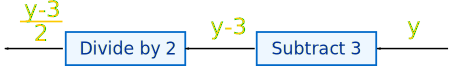
So the inverse of: 2x+3 is: (y-3)/2
The inverse is usually shown by putting a little "-1" after the function name, like this:
f-1(y)
We say "f inverse of y"
So, the inverse of f(x) = 2x+3 is written:
f-1(y) = (y-3)/2
(I also used y instead of x to show that we are using a different value.)
Back to Where We Started
The cool thing about the inverse is that it should give us back the original value:
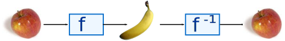
When the function f turns the apple into a banana,
Then the inverse function f-1 turns the banana back to the apple
Example:
Using the formulas from above, we can start with x=4:
f(4) = 2×4+3 = 11
We can then use the inverse on the 11:
f-1(11) = (11-3)/2 = 4
And we magically get 4 back again!
We can write that in one line:
f-1( f(4) ) = 4
"f inverse of f of 4 equals 4"
So applying a function f and then its inverse f-1 gives us the original value back again:
f-1( f(x) ) = x
We could also have put the functions in the other order and it still works:
f( f-1(x) ) = x
Example:
Start with:
f-1(11) = (11-3)/2 = 4
And then:
f(4) = 2×4+3 = 11
So we can say:
f( f-1(11) ) = 11
"f of f inverse of 11 equals 11"
Solve Using Algebra
We can work out the inverse using Algebra. Put "y" for "f(x)" and solve for x:
| The function: | f(x) | = | 2x+3 | |
| Put "y" for "f(x)": | y | = | 2x+3 | |
| Subtract 3 from both sides: | y-3 | = | 2x | |
| Divide both sides by 2: | (y-3)/2 | = | x | |
| Swap sides: | x | = | (y-3)/2 | |
| Solution (put "f-1(y)" for "x") : | f-1(y) | = | (y-3)/2 |
This method works well for more difficult inverses.
Fahrenheit to Celsius
A useful example is converting between Fahrenheit and Celsius:
For you: see if you can do the steps to create that inverse!
Inverses of Common Functions
It has been easy so far, because we know the inverse of Multiply is Divide, and the inverse of Add is Subtract, but what about other functions?
Here is a list to help you:
| Inverses | Careful! | ||
| <=> | |||
| <=> | Don't divide by zero | ||
| 1x | <=> | 1y | x and y not zero |
| x2 | <=> | 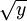 | x and y ≥ 0 |
| xn | <=> | 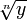 or 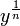 | n not zero
(different rules when n is odd, even, negative or positive) |
| ex | <=> | ln(y) | y > 0 |
| ax | <=> | loga(y) | y and a > 0 |
| sin(x) | <=> | sin-1(y) | -π/2 to +π/2 |
| cos(x) | <=> | cos-1(y) | 0 to π |
| tan(x) | <=> | tan-1(y) | -π/2 to +π/2 |
(Note: you can read more about Inverse Sine, Cosine and Tangent.)
Careful!
Did you see the "Careful!" column above? That is because some inverses work only with certain values.
Example: Square and Square Root
When we square a negative number, and then do the inverse, this happens:
But we didn't get the original value back! We got 2 instead of −2. Our fault for not being careful!
So the square function (as it stands) does not have an inverse
But we can fix that!
Restrict the Domain (the values that can go into a function).
Example: (continued)
Just make sure we don't use negative numbers.
In other words, restrict it to x ≥ 0 and then we can have an inverse.
So we have this situation:
- x2 does not have an inverse
- but {x2 | x ≥ 0 } (which says "x squared such that x is greater than or equal to zero" using set-builder notation) does have an inverse.
No Inverse?
Let us see graphically what is going on here:
To be able to have an inverse we need unique values.
Just think ... if there are two or more x-values for one y-value, how do we know which one to choose when going back?
| General Function |
| 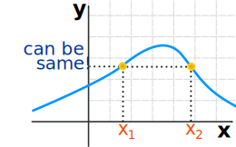 |
Imagine we came from x1 to a particular y value, where do we go back to? x1 or x2?
In that case we can't have an inverse.
But if we can have exactly one x for every y we can have an inverse.
It is called a "one-to-one correspondence" or Bijective, like this
| Bijective Function |
 |
A function has to be "Bijective" to have an inverse.
So a bijective function follows stricter rules than a general function, which allows us to have an inverse.
Domain and Range
So what is all this talk about "Restricting the Domain"?

In its simplest form the domain is all the values that go into a function (and the range is all the values that come out).
As it stands the function above does not have an inverse, because some y-values will have more than one x-value.
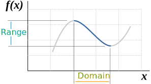
But we could restrict the domain so there is a unique x for every y ...
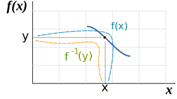
Note also:
- The function f(x) goes from the domain to the range,
- The inverse function f-1(y) goes from the range back to the domain.
Let's plot them both in terms of x ... so it is now f-1(x), not f-1(y):
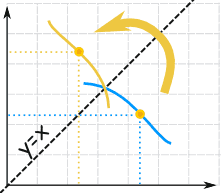
f(x) and f-1(x) are like mirror images
(flipped about the diagonal).
In other words:
The graph of f(x) and f-1(x) are symmetric across the line y=x
Example: Square and Square Root (continued)
First, we restrict the Domain to x ≥ 0:
- {x2 | x ≥ 0 } "x squared such that x is greater than or equal to zero"
- {√x | x ≥ 0 } "square root of x such that x is greater than or equal to zero"
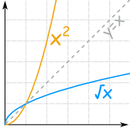
And you can see they are "mirror images"
of each other about the diagonal y=x.
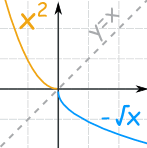
Note: when we restrict the domain to x ≤ 0 (less than or equal to 0) the inverse is then f-1(x) = −√x:
- {x2 | x ≤ 0 }
- {−√x | x ≥ 0 }
Which are inverses, too.
Not Always Solvable!
It is sometimes not possible to find an Inverse of a Function.
Example: f(x) = x/2 + sin(x)
We cannot work out the inverse of this, because we cannot solve for "x":
y = x/2 + sin(x)
y ... ? = x
Notes on Notation
Even though we write f-1(x), the "-1" is not an exponent (or power):
| f-1(x) | ...is different to... | f(x)-1 |
| Inverse of the function f | f(x)-1 = 1/f(x)
(the Reciprocal) |
Summary
- The inverse of f(x) is f-1(y)
- We can find an inverse by reversing the "flow diagram"
- Or we can find an inverse by using Algebra:
- Put "y" for "f(x)", and
- Solve for x
- We may need to restrict the domain for the function to have an inverse